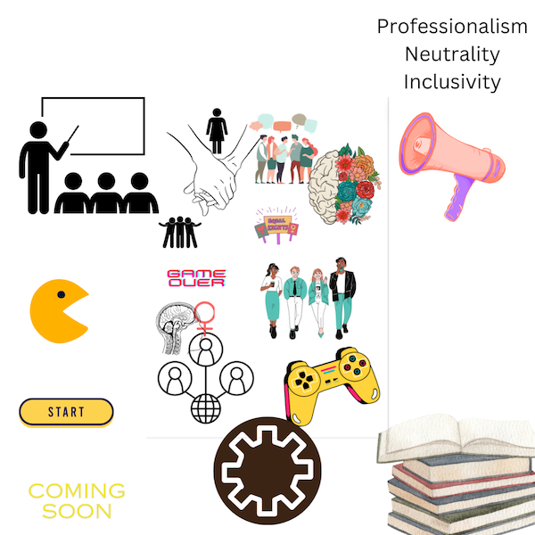

IL Activity 5
Task 3:
Websites: womenintech.co.uk;
1. ACCURACY
Extremely accurate and informative. It seams to be made by women for women to make real developments and improvements in the lives of women working in IT. Their use of case studies, factual information and figues, and links to various resources bring about a professional and reliable medium for education and other practical uses.
2. ACTIVE VOICE
Active Voice example: "Take a look at OUR inspiring..."
3. LIMIT BIASES
As much as they will attempt to remain impartial, a website targeted towards the improvement of a single group's livelihoods, it will end up having an inadvertant bias. By default, it will not appeal to men. There seems to also be somewhat of a lack of effort to include mature or older users who might struggle the most in inclusion or opportunities.
4. CLARITY
I have not come across any niche or sector/industry-specific words I would not understand.
5. CONCISENESS
Very concise and staright forward. There are a lot of hyperlinks and buttons leading to more specific sections. Very good organisation!
6. CONVERSATIONAL AND SMOOTHLY FLOWING PROSE
I have not come across many apostrophes, and the language is very easily interpreted with a welcomin tone.
7. CORRECTNESS
A very professional website with an appropriate tone, no sign of grammatical errors or use of slang terms.
8. PARALLELISM
Evident use of parallelism: ex.: 'employers can foster understanding, empathy and create new habits'
9. POSITIVE VOICE
They are careful to use words that instill a positive and hopeful outlook whilst remianing to stay as unbiased as possible. They use words such as inclusion, equality, aid etc. that all symbolise an optimistic view without being overly persuasive.
10. STRONG NOUNS AND VERBS
Examples: 'content is created with experts... inspirational stories'
11. SENTENCE VARIETY
I did not come across repetitive phrases or redundant wording.
12. SIMPLE WORDS
Again, the language is very inclusive and staright forward.
13. SHORTER PARAGRAPHS
Especially in the homepage and about us section, paragraphs are two to three lines long.
14. TONE AND VOICE
Professional, theys tress it is written by experts in the field.
Reflective Statement:
I have defined my definite audience and purpose of my website. I am quite happy with my progress so far, however, there is still a lot of research to conduct.
I have to keep in mind different elements I would like to implement, such as a professional unbiased tone and an informative approach.
I have to also remind myself to keep my ambitions rather realistic and not out of hand as currently, my plan is already well beyond my current capabilities and skills.
Therefore, I must adjust my outline and adapt it according to my timeline and other time commitments.
Writing and editing still have a long way to go, but there has been some minimal progress
Lab Week 5
Task 1
Part 2: High Frequency Words = women, tech, technology, jobs, opportunity, sector, guides; Trends = women, applying, recruting, hiring, women, recruiting
Part 3: I would say my findings were quite accurate. They vocabulary seems quite dense and not redundant. They do not seem to be repeating themselves too much, and the words that appear the most frequently are very relevant to their purpose.
All word appearing in high-frequency and trends are professional and have an appropriate tone. Contexts seem very informative and educational, not at all persuasive.
I belive i misjudged them for being more exclusive and not catering to older people and men. I belive they recognise the uses of their website for professionals in various industries, regardless of age or gender.
TASK 2
'Are you a professional in the game devlopment industry? Have you ever played video games? Or perhaps, have you ever participated in any community activities that involved playing any video games? If you answered yes to any of these questions, try to recall whether you are or were surrounded by women or how they were portrayed in the games you played or have worked on.'
'This issue is no longer affecting only women in the industry, the impact goes far beyond only the gaming community.'
Analysis:
I cannot use emotions or an overly hostile tone whne addressing professional or people in power. There is a fine line between informing and persuading and despite my recognition of this, I have had a hard time to remain unbiased and impartial. I will have to stick to a more balanced approach with a neutral tone without many connotations. I must select my language more carefully and make it approapriate to the issue at hand and more importantly, to my target audience.
